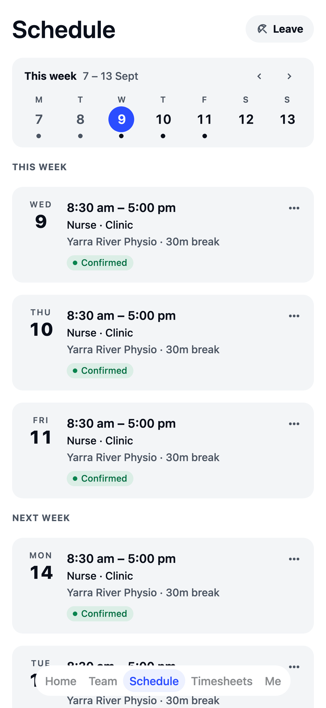
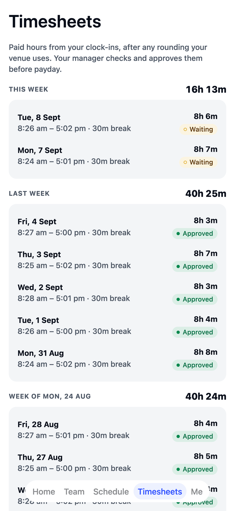

Front desk to
treatment room. Sorted.
Keep the front desk and every treatment room covered, keep registrations up to date, and sort leave without the phone tag.
Reception and clinic
Front desk and clinical staff rostered side by side, so you see the whole day at once.
Registrations on file
Track AHPRA registrations and CPR, and see when each one is due to run out.
Leave, sorted
Staff ask from their phone, you approve, and the roster knows they're away.
Built around a practice week.
Pick "clinic or healthcare" in the welcome wizard and your team is set up in minutes: no implementation call, no sales demo.
- Your team, ready to go Receptionists, nurses, practitioners and a practice manager, plus a typical week to start from: weekdays with the front desk open 8 till 4:30, and Saturday-morning reception.
- AHPRA registrations, CPR and checks Track who holds what and when it expires, including Working with Children and Police Checks, and get a warning before you roster someone who doesn't have one.
- Suggested rules for clinics A meal break on shifts longer than 5 hours, 10 hours off between shifts, and no shift longer than 10½ hours. Common starting points: you check them, switch them on, and change any number.
- Leave without the paperwork Staff request leave from their phone and see their balances, and approved leave shows on the roster before you schedule over it.
- Shift swaps Someone can't make Thursday? They offer the shift, a teammate in the same job takes it, and you approve.
- More than one clinic? Share staff between locations when one practice is short.
- A daily wages budget The roster's cost bar and the live wages figure tell you when a day is running heavy.
- Announcements people confirm A new booking process, a change of opening hours: see who's read it.
The app your team will actually open.
Shifts land in their pocket the moment you publish, and in their phone calendar too. No more pinning a printed roster up in the staff room.



Free for your first 10 staff.
Actually free.
Not a trial. No card details, no locked features. One honest price when you grow past 10.
Start freeQuestions clinics and practices ask.
Can I keep track of AHPRA registrations and CPR?
Yes. Record each registration and when it's due to run out, along with CPR, Working with Children and Police Checks, and TEAM MATE warns you before you roster someone who doesn't have one.
Can reception and clinical staff share one roster?
Yes. Front desk and clinical staff are rostered side by side, so you see the whole day at once.
How do staff ask for leave?
From their phone. They see their balances, you approve, and approved leave shows on the roster before you schedule over it.
We have more than one clinic. Does that work?
Yes. Each clinic is its own location, and you can share staff between them when one is short.
Built for every crew.
TEAM MATE started in Melbourne cafés and restaurants. The same app runs all of these crews too, each with its own setup in the welcome wizard.